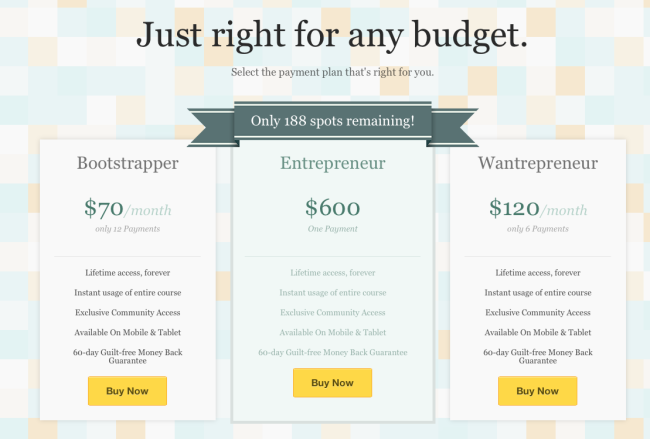

Can You Sell Your Course As Well As Noah Kagan?
24 secrets from the marketing king who created AppSumo
Today’s tear down is for Noah Kagan’s How To Make A $1,000 A Month Business. It’s basically a web course for wantrepreneurs who want to finally start their business for real.
It’s a product with a much higher price tag than the previous tear down (for a free course on list building), the page is a lot longer, but there are some insanely cool tricks to pick up along the way.
Let's go.
1. Test Your Landing Pages
First treatment for the landing page, with a short video
Noah is a bona fide optimization nerd. He’s even built a product just to optimize WordPress headlines.
So it comes as no surprise that he also A/B tests his landing pages. Optimization is a subject which on its own requires a lot of know-how that I’m not planning to cover here (yet). For now, just go read ConversionXL, it’s the best blog on the subject around.
You can see two different variations above, but these are just the ones I noticed while I was writing this tear down. There must be a bunch of other tests running, or there have been in the past.
2. When In Doubt, Use A How-To Headline
Much like for Double Your Email List course, Noah goes with a benefit/promise headline.
He’s using a classic “how to” headline, one of the safest types of headline you can go for, offering a clear benefit, clearly measured ($1,000, not “How to increase your monthly income”), and it includes a mechanism to achieve the benefit (make a business).
Again, Noah doesn’t make unbelievable promises. After all, most people buying the product probably already make $1000/mo. So it seems like it’s something that’s doable. Not a get-rich-quick scheme.
If you look at the video on KingSumo Headlines, you’ll see Noah explains where this headline comes from.
The “How to” headline pulled 10% more conversions than what the course was originally going to go with (“Make your first dollar”).
So, test your headlines, and make sure you’ve got a “how to” headline in your variations.
3. Keep The Momentum Going With Yes/No Questions
If you’re used to reading old-school sales letters, you’ll see plenty of yes/no questions like that.
The goal is to keep the interest of the reader by collecting “yeses”.
This subhead tries to identify or select an audience by asking a question that will resonate with the audience. In this case, it’s not so much people who are already running a business as much as people who have been wanting to start for a long time (“wantrepreneurs”).
It may be trying a little too hard to be clever with the parallel construction (“failed at” / “failed at”). It sounds good, but is it as clear and convincing as it can be?
“Aren’t you getting tired of pushing back on finally creating your own business?”
4. Know How To Pitch Your Service In A Couple Sentences
Two sentences that briefly describe what the product is, what it will deliver: find the right idea, start a profitable business you’ll enjoy.
Gotta ask though: without spending more money? Well, I do have to pay for the course, don’t I? That sounds weird.
5. Ask For Action, But Don’t Ask For Too Much Too Early
The CTA design clearly accentuates the primary call to action that corresponds to the primary action (buying the course), but here it still offers a secondary option (learn more), which is probably a good idea.
Why?
Because few readers will be ready to buy at this stage. So what they want is to “learn more”. Bingo.
Lots of people will say you need a CTA above the fold, yadda, yadda (although there is some healthy skepticism). I would still test without the primary CTA above the fold.
The reason why I would test it is that when I’m faced with a situation like this, what I’ll do is click the “Get it now” button. That would take me to the bottom of the page where I would see the price.
So, how much is it? Whoa, SIX HUNDRED BUCKS? *Closes tab*
Many people will balk at the $600 if they don’t know what kind of value to expect, and they just won’t read the rest of the page.
Which is too bad because as we’ll see later, Noah spends a lot of time setting up comparisons so that the price doesn’t seem as high.
6. Try A Video To Cater To Different Media Preferences
I personally don’t care much for video when consuming information. I’d rather look at text so I can see at a glance what parts I can skip, and what parts are going to be interesting for me.
But people have different preferences. And some people prefer video.
Context is also important. Maybe they’re on a bus ride and they don’t want to squint to read on their phone.
So if you can afford it, just test having a short video to describe your product.
It doesn’t hurt to add a little caption near your video like: “See what you’re going to learn in the course in this short 2 min video”
7. Create Urgency
Here Noah is creating urgency by indicating that the number of spots is limited.
The logic behind it is that people tend to think in shortcuts, and scarcity is one of the most efficient one. People think Scarce = Valuable.
If you read a little bit about marketing, chances are you’ll come across a book called Influence by Robert Cialdini. Scarcity is one of the most potent psychological triggers illustrated in the book.
It’s a tried and true principle, and a lot of people use those techniques and have the data to back it up. But because it has worked sometimes doesn’t mean it’s always the best solution, and it doesn’t mean this particular implementation of the technique is the best.
There’s a couple ways this can go wrong :
- Some people won’t believe it. They’ll come back 5 minutes later, see the countdown hasn’t moved, and assume they’re being swindled. They’ve seen too many fake countdowns to believe it.
- Some people will wonder: 189 spots remaining… out of how many? And how long have you been offering that product? If they came a month earlier and there were already ~200 spots left, maybe you’re not selling that much. Maybe your product kinda sucks.
- Some people will interpret it to mean the opposite: well, there’s still 189 spots left. I got time to figure it out. Maybe I’ll finish reading this later.
So, scarcity and urgency are definitely a powerful persuasion trigger, but it has to be used perfectly. Before people act now, they have to believe they need to act now.
8. Adapt Your Message To Your Audience
It’s obvious that your message should fit your audience.
But if you can make your message just a little bit more specific chances are it’s going to be a lot more persuasive.
Here, the audience is wantrepreneurs. But all wantrepreneurs aren’t the same. They’re not all looking to build the same types of businesses.
That’s where self-selection devices like this one come in.
Here Noah offers 4 different options to the reader, depending on what he’s interested in.
Each option leads to a different long testimonial being displayed.
The main point here is that if you can match your audience’s expectations more precisely, go for it.
People generally don’t want to start any old business. They want to start a business they’re going to like (let’s leave aside the question of whether that’s sustainable…). So if they can start from a point that is closer to their interest, and see how someone has made it, it’s going to work better.
Now this little bit of self-selection works fine, but it does add complexity to the page. What if I don’t want to create a physical product? That whole part of the page is useless to me.
But to avoid that problem, Noah would have had to create 4 different pages, each targeted to one of his segments. And to do that, he would have had to know beforehand how to segment his trafic precisely to each offer.
Sometimes the effort required to do that kind of laser-focused targeting is not worth it. What if people are interested in several of those things? Hey, I’m a consultant but maybe I should do a digital product?
9. Use Testimonials — Lots Of ’Em
There’s something you’re going to notice right away about the testimonials on this page. They’re LONG.
They range from 300 to 700 words.
In fact, if you look at the whole page, testimonials account for 59% of the text. More if you assume people read the copy for more than one product type.
We’re not talking about lame “Herp derp, I LOVE this course!!!” types of testimonials here.
Testimonials are the bread and butter element of social proof. But there’s an art to writing good testimonials.
10. Treat Testimonials Like Sales Copy
If you look at the testimonials closely, you’ll notice it’s not just lavish praise.
There is a lot of sales copy embedded in those testimonials.
In the first testimonial, Bryan teases the reader about THE ONE thing that completely transformed his approach to business and finally helped him build a successful product.
The testimonial highlights one precise idea Bryan learned, instead of giving vague praise about the product in general. It also gives a precise figure about how much it has allowed him to earn.
Now, think about what we said about the CTA and the price earlier.
If you know nothing about the product and you see a 600$ price tag, you might think it’s a lot. But if you see the $600 price tag AFTER you’ve seen someone make $20,000 with the product, it doesn’t seem so big.
That’s just using ANOTHER psychological principle, which is the principle ofcontrast.
People tend not to judge things in absolutes (“$600 is a lot of money”), but in relative terms (“$600 is peanuts compared to a $20,000 gain”). What matters is what they’re comparing.
If they just arrived to your website after buying a pack of gum, a $600 expense will seem like a lot, because the latest number they have in mind, or the most common number they’re used to associating with expenses is much lower.
But if you’ve just told them about the $20,000, $600 seems like a bargain.
Now, there’s one thing I’m not terribly fond of about the testimonials: the titles.
“Making A Digital Product”, “Making A Physical Product”, etc. Meh.
That doesn’t really make me want to read the testimonials. They could use the same teasing technique: “Learning this one technique finally helped me understand what my business ideas were missing, and skyrocketed my sales to $20,00 within a year.”
If you’re going to treat your testimonials like sales copy, that means your testimonials deserve real headlines.
11. Describe Your Benefits With Precise Figures
Let’s look at some excerpts from those testimonials again:
See what they have in common?
All of them give precise figures.
Not vague bullshit. 71% increase in earnings. A $4,500 web design job. $2,000 in marketing consulting fees. Results within 90 days. $20,000 in sales.
They don’t say that they “made a lot of money” or that they “got results fast”.
Anyone can say that kind of stuff. You need to give precise figures that sound believable if you want your testimonials to give you credibility.
12. Repeat Your Calls To Action, And Make Them As Targeted As Possible
Each testimonial is followed by a call to action :
As you can see, Noah targets each call to action to appeal to a specific segment.
When your page is getting long, you want to repeat your call to action to prevent the reader from having to scroll back all the way up to the top or the bottom to act.
You want to make it as easy as possible to complete the goal of your page, whatever it is.
13. Leverage The Principle Of Commitment And Consistency
What’s that all about?
This kind of tactic is often used to challenge the reader. Here it’s suggesting that if you’re just a slacker, this isn’t for you. Of course, people don’t think that. They want to be winners.
What this relies on is, again, one of the basic principles of persuasion calledcommitment and consistency.
Once people have read something like this and told themselves “I’m the kind of person who commits to stuff and acts on it, I’m willing to work to be successful” then they will make bigger commitments as long as they’re consistent with that belief.
The way it works is that later on, an argument can be built that “IF you’re the kind of person who’s committed to success… THEN this product is what you need.” At which point the reader will feel strongly compelled to act on this prior commitment to stay consistent.
The design makes this part unmissable, and nobody would skip a paragraph with a title like that.
But more on that later.
14. Pay Attention To Detail
Web courses are generally divided into modules of some kind.
But what’s interesting here is that he doesn’t call it “Module 1” but “Phase 1“.
It gives the course a step-by-step quality that lets the student know they’re not just going to dump a bunch of stuff on him at random. There’s actually a build-up in the course. You’re going to gradually build something.
It’s details like this that separate the good from the great. Every word matters.
15. Put Your Testimonials In Strategic Locations
The page is created as a series of blocks made up of a “promise” layer that describes the course, followed by a “proof” layer that demonstrates how the promise will be delivered
As important as having lots of testimonials can be, putting them in the right place is just as important.
After Noah introduces the course and gets your interest with testimonials that highlight success stories and positive outcomes, he gets to the meat of the subject and describes the product in more detail.
Each phase of the product is supported by one testimonial that highlights benefits that are specific to this part of the course.
The landing page has this “layer cake” feel: one layer of promise and claims, one layer of proof, one layer of promise and claims, one layer of proof, etc.
16. Put A Time Limit To Your Promise
Johnson Boxes are useful to highlight important parts and stop the skimmers to grab their attention
After the main description of the product, a small Johnson Box recaps the main benefit of the course.
Here it even adds a time limit to the promise: you’ll build your $1000/mo business within 60 days. Promises that are bound in time tend to make much stronger arguments, especially when they are tied to a guarantee.
17. Give People Lots Of Bonuses
But wait… There’s more!
Noah’s already presented why you should buy the product, and what the product is all about, so why go any further?
Because people LOVE free stuff! Especially when thrown on top of an already interesting offer.
That’s what the next few sections of the page do here :
Along with your course, you also get personalized support and a community (and a lil’ typo)
“The community along is worth the price”
It works on all platforms, all the time. Not the craziest benefit of all time, but why not say it when you can ?
You can use it anywhere on the planet. Again, nothing crazy in the age of the internet, but it’s still a benefit.
They’re not just random bonuses though: the community and internationality aspects also play on the liking psychological trigger. People are more likely to buy something if someone who is like them bought it before.
If someone from your country bought it before, or if there’s already a full community of ex-wantrepreneurs who went through the program, that makes it more compelling.
Social proof is more potent when it comes from people you identify with.
18. Crush All Objections
Crush all possible objections, starting with the most common ones
Now that the value of the product has been established, it’s time to crush the last few objections.
Probably the most common objection in sales is that the price is too high.
Remember that at this point, the price of the product still hasn’t been revealed (unless you clicked on the CTA button).
Watch what he does.
The technique used is price trivialization: the product only costs $2.30/day (the price of a cup of coffee, the image is here for a reason). For access FOREVER.
Then Noah uses the principle of contrast again to compare his product to “other courses” that cost up to $3,000.
Now, remember. At this point, the numbers that have been put in the readers head are the following:
- The course will help you build a $1000/mo business
- Some people have made as much as $20,000 from it
- It costs $2.30/day
- Other options cost $3000
Sounds like a no brainer, right?
19. Double Down On Your Reader’s Commitment
Noah comes back to the original commitment.
You have to understand what’s at play here. The goal is NOT to sound like an asshole and tell people they’re lazy.
The thing is, people don’t think they’re lazy. And when they’re reminded they’re being lazy, they hate themselves.
Especially when you tell them they just need 30 minutes a day. Who can’t commit 30 minutes a day to something?
What this does is it makes people commit even more to the idea that they’re not lazy.
It plays off the consistency principle. People want to act in accordance to what they believe they stand for.
And people don’t stand for laziness.
What Noah does afterwards, as already mentioned, is leverage this commitment to show that HIS PRODUCT is the LOGICAL NEXT STEP if you make that kind of a commitment.
20. Reassure Your Prospects
Sometimes, testimonials just aren’t enough. So you can be more explicit about it.
A very simple way to reassure people before the sale. You’re not going to be alone. People are going to help you and provide you with personalized support, and HERE IS what they look like.
The pictures add a personal touch that humanizes the product and probably wins conversions.
21. Use Yourself As A Case Study — If It’s Relevant
It’s generally a bad idea to talk about yourself instead of talking about your prospects problems.
But it doesn’t mean you can never ever talk about yourself, especially when you have relevant experience.
Here, Noah uses his own story to explain the origin of the product. The product comes from his own experience, work he did at Facebook and Mint, which are household names that carry a lot of weight.
22. Choose The Names Of Your Pricing Plans Carefully

Now, remember what we said about commitment, and look at names of the pricing plans.
Notice anything?
EVERYTHING on the page is about NOT being a Wantrepreneur.
So people aren’t going to get that plan.
And they don’t want to be cheap skates. They’re investing in their own success.
That means there’s only one logical conclusion: you have to go with the Entrepreneur plan. The only one worthy of a real Entrepreneur like yourself, who repeatedly committed to spending time on his new business. Not a stinkin’ wantrepreneur.
You see a lot of similar tactics used for SaaS products.
Big companies don’t want to buy the “small business” plan regardless of their actual needs.They’re a Big Company. They NEED the Enterprise plan that costs 5x more.
23. Use The CTA-Testimonial One-Two Punch
Let’s face it: most people won’t reach the bottom of the page.
Only those who are already reaaaallly interested in Noah’s product will.
That’s one the CTA-Testimonial one-two punch is most efficient.
Right after you ask for the sale one last time, you conveniently place one last testimonial to push the prospect over the edge. The headline “Still not convinced?” is perfect here.
24. Keep Improving It By Adding Customer Feedback
You can only know so much about your audience.
That’s why you want to give them a chance to give you feedback. Missing information about your product, objections you did not address, most important benefits: there’s a lot you can learn to tweak and improve your landing pages.

{kind=link}
{kind=link}
{kind=link}
{kind=link}
{kind=link}
{kind=link}